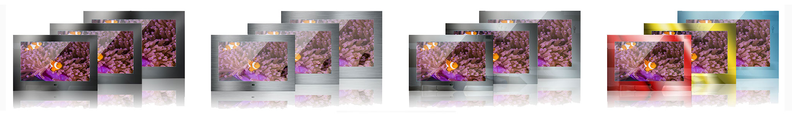

Quickflyer
• Bad TV Quickflyer
• Smart Spiegel Quickflyer
• Spiegel TV Quickflyer
• Küchen Smart Quickflyer
• Rahmen TV Quickflyer
Katalog
• Bad TV Katalog
• Mues-Tec Katalog
• Spiegel TV Katalog
• Smart Katalog
• Audiovisionen - Bad-Wohnen-Leben
Handbuch
• LED TV Handbuch
• Smart Handbuch
• Aqua Handbuch

• E-1850 TechnischesDatenblatt
• E-2200 TechnischesDatenblatt
• E-3200 TechnischesDatenblatt
• S-1850 TechnischesDatenblatt
• S-2200 TechnischesDatenblatt
• S-3200 TechnischesDatenblatt
• Badezimmer TV Installation
• E-1850 Technical Datasheet
• E-2200 Technical Datasheet
• E-3200 Technical Datasheet
• S-1850 Technical Datasheet
• S-2200 Technical Datasheet
• S-3200 Technical Datasheet
• Bathroom TV Installation
• E-1850 Fiche Technique
• E-2200 Fiche Technique
• E-3200 Fiche Technique
• S-1850 Fiche Technique
• S-2200 Fiche Technique
• S-3200 Fiche Technique
• TV de Salle de Bain Installation
• E-1850 Blad Met TechnischeGegevens
• E-2200 Blad Met TechnischeGegevens
• E-3200 Blad Met TechnischeGegevens
• S-1850 Blad Met TechnischeGegevens
• S-2200 Blad Met TechnischeGegevens
• S-3200 Blad Met TechnischeGegevens
• Badkamer-TV Installatie
Bathroom TV Downloads
• Spiegel TV AllgemeinTechnischesDatenblatt
• Spiegel TV Installation
• Mirror TV Technical Datasheet
• Mirror TV Installation
• TélévisionMiroir Fiche Technique
• TélévisionMiroir Installation
• Spiegel TV Blad Met TechnischeGegevens
• Spiegel TV Installatie
Mirror TV Downloads
• K-1850 TechnischesDatenblatt
• K-2200 TechnischesDatenblatt
• Küchen TV Installation
• K-1850 Technical Datasheet
• K-2200 Technical Datasheet
• Kitchen TV Installation
• K-1850 Fiche Technique
• K-2200 Fiche Technique
• TV de Cuisine Installation
• K-1850 Blad Met TechnischeGegevens
• K-2200 Blad Met TechnischeGegevens
• KeukenInstallatie
Kitchen TV Downloads
• SM-2150 TechnischesDatenblatt
• SM-2360 TechnischesDatenblatt
• SM-4300 TechnischesDatenblatt
• ST-1160 TechnischesDatenblatt
• Smart Spiegel Installation (MitBefestigungswinkel)
• Smart Spiegel Installation (OhneBefestigungswinkel)
• SM-2150 Technical Datasheet
• SM-2360 Technical Datasheet
• SM-4300 Technical Datasheet
• ST-1160 Technical Datasheet
• Smart Mirror (with Mounting Bracket) Installation
• Smart Mirror (without Mounting Bracket) Installation
• SM-2150 Fiche Technique
• SM-2360 Fiche Technique
• SM-4300 Fiche Technique
• ST-1160 Fiche Technique
• Miroir Intelligent avec support. Installation
• Miroir Intelligent sans support. Installation
• SM-2150 Blad Met TechnischeGegevens
• SM-2360 Blad Met TechnischeGegevens
• SM-4300 Blad Met TechnischeGegevens
• ST-1160 Blad Met TechnischeGegevens
• Smart Spiegel met bevestigingssteun. Installatie
• Smart Spiegel zonderbevestigingssteun. Installatie
Smart Mirror Downloads
• KS-2150 TechnischesDatenblatt
• Küchen Smart Installation
• KS-2150 Technical Datasheet
• Kitchen Smart Installation
• KS-2150 Fiche Technique
• L'intelligenceen Cuisine. Installation
• KS-2150. Blad Met TechnischeGegevens
• Keuken-Smart. Installatie
Kitchen Smart Downloads
• Rahmen TV R-3200 TechnischesDatenblatt
• Rahmen TV R-4300 TechnischesDatenblatt
• Rahmen TV R-5500 TechnischesDatenblatt
• Rahmen TV Installation
• R-3200 Technical Datasheet
• R-4300 Technical Datasheet
• R-5500 Technical Datasheet
• Frame TV Installation
• R-3200 Fiche Technique
• R-4300 Fiche Technique
• R-5500 Fiche Technique
• TV Encadrée. Installation
• R-3200. Blad Met TechnischeGegevens
• R-4300. Blad Met TechnischeGegevens
• R-5500. Blad Met TechnischeGegevens
• Frame-TV. Installatie
Frame TV Downloads